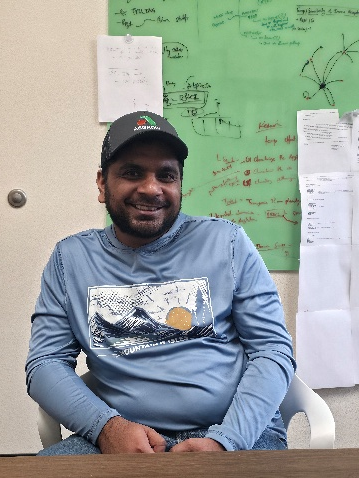

GRADUATE STUDENT
Sachin Sharma
sachin.sharma@sdstate.eduResearch Bio
Sachin’s research focuses on soybean genomics and major soilborne pathogens, particularly white mold and Fusarium diseases. His work aims to understand host–pathogen interactions and identify genomic factors that contribute to soybean disease resistance.